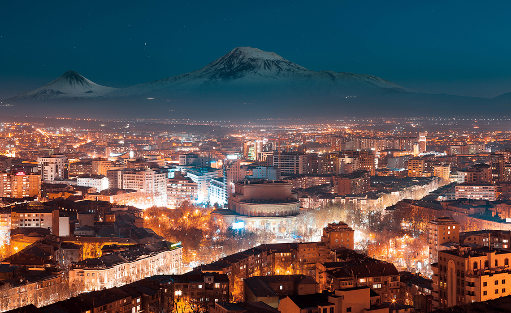

Galleri med bilder, video, audio
Armeniska Berger

Huvudstaden Jerevan

Var befinner sig Armenien

Kloster Khor Virap

Kloster Tatev

Armeniska bokstäver
Yerevan

Republikens torg

Yerevan på natten

I templet Garni i Armenien

I sevansjön

Armenisk kultur
Video om Yerevan
Källa- Wikimedia commons Captain
Spilet
CC BY 3.0
Armenisk mat
källa Youtube
Armenisk folkmusic
Källa Se Youtube
Armenisk instrument, duduk